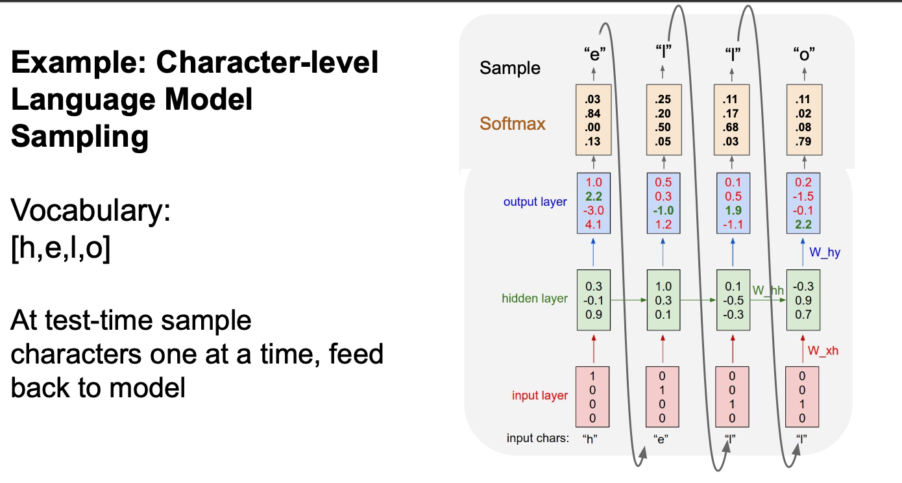

Lecture 8: Recurrent Neural Networks¶
(Vanilla) Recurrent Neural Network¶
The state consists of a single “hidden” vector h:
\(h_t = f_W(h_{t-1},x_t)\)
\(h_t = tanh(W_{hh}h_{t-1}+W_{xh}x_t)\)
\(y_t = W_{hy}h_t\)
- \(f_W\) is the same ALL THE TIME
So Backward time, we need to sum over because \(f_W\) is repeatedly used many times.

Many to Many¶

Many to One¶

One to Many¶

Sequence to Sequence: Many-to-one + one-to-many¶
- Number of output tokens might be different from the number of input tokens.

Example : Character-level Language Model¶
-
Vocabulary:
[h,e,l,o] -
Example training sequence: “hello”
-
At test-time sample characters one at a time, feed back to model

- If only one-hot, not that effectively, so we insert an "embedding layer between input and hiddne layses"
Backpropagation through time¶
- Forward through entire sequence to compute loss, then backward through entire sequence to compute gradient ： Takes a lot of memory of long sequences!
- Run forward and backward through chunks of the sequence instead of whole sequence
Truncated Backpropagation through time¶
- Take subsets of the sequence.
- Carry hidden states forward in time forever, but only backpropagate for some smaller number of steps

- Only
112lines withoud using pytorch.
"""
Minimal character-level Vanilla RNN model. Written by Andrej Karpathy (@karpathy)
BSD License
"""
import numpy as np
# data I/O
data = open('input.txt', 'r').read() # should be simple plain text file
chars = list(set(data))
data_size, vocab_size = len(data), len(chars)
print 'data has %d characters, %d unique.' % (data_size, vocab_size)
char_to_ix = { ch:i for i,ch in enumerate(chars) }
ix_to_char = { i:ch for i,ch in enumerate(chars) }
# hyperparameters
hidden_size = 100 # size of hidden layer of neurons
seq_length = 25 # number of steps to unroll the RNN for
learning_rate = 1e-1
# model parameters
Wxh = np.random.randn(hidden_size, vocab_size)*0.01 # input to hidden
Whh = np.random.randn(hidden_size, hidden_size)*0.01 # hidden to hidden
Why = np.random.randn(vocab_size, hidden_size)*0.01 # hidden to output
bh = np.zeros((hidden_size, 1)) # hidden bias
by = np.zeros((vocab_size, 1)) # output bias
def lossFun(inputs, targets, hprev):
"""
inputs,targets are both list of integers.
hprev is Hx1 array of initial hidden state
returns the loss, gradients on model parameters, and last hidden state
"""
xs, hs, ys, ps = {}, {}, {}, {}
hs[-1] = np.copy(hprev)
loss = 0
# forward pass
for t in xrange(len(inputs)):
xs[t] = np.zeros((vocab_size,1)) # encode in 1-of-k representation
xs[t][inputs[t]] = 1
hs[t] = np.tanh(np.dot(Wxh, xs[t]) + np.dot(Whh, hs[t-1]) + bh) # hidden state
ys[t] = np.dot(Why, hs[t]) + by # unnormalized log probabilities for next chars
ps[t] = np.exp(ys[t]) / np.sum(np.exp(ys[t])) # probabilities for next chars
loss += -np.log(ps[t][targets[t],0]) # softmax (cross-entropy loss)
# backward pass: compute gradients going backwards
dWxh, dWhh, dWhy = np.zeros_like(Wxh), np.zeros_like(Whh), np.zeros_like(Why)
dbh, dby = np.zeros_like(bh), np.zeros_like(by)
dhnext = np.zeros_like(hs[0])
for t in reversed(xrange(len(inputs))):
dy = np.copy(ps[t])
dy[targets[t]] -= 1 # backprop into y. see http://cs231n.github.io/neural-networks-case-study/#grad if confused here
dWhy += np.dot(dy, hs[t].T)
dby += dy
dh = np.dot(Why.T, dy) + dhnext # backprop into h
dhraw = (1 - hs[t] * hs[t]) * dh # backprop through tanh nonlinearity
dbh += dhraw
dWxh += np.dot(dhraw, xs[t].T)
dWhh += np.dot(dhraw, hs[t-1].T)
dhnext = np.dot(Whh.T, dhraw)
for dparam in [dWxh, dWhh, dWhy, dbh, dby]:
np.clip(dparam, -5, 5, out=dparam) # clip to mitigate exploding gradients
return loss, dWxh, dWhh, dWhy, dbh, dby, hs[len(inputs)-1]
def sample(h, seed_ix, n):
"""
sample a sequence of integers from the model
h is memory state, seed_ix is seed letter for first time step
"""
x = np.zeros((vocab_size, 1))
x[seed_ix] = 1
ixes = []
for t in xrange(n):
h = np.tanh(np.dot(Wxh, x) + np.dot(Whh, h) + bh)
y = np.dot(Why, h) + by
p = np.exp(y) / np.sum(np.exp(y))
ix = np.random.choice(range(vocab_size), p=p.ravel())
x = np.zeros((vocab_size, 1))
x[ix] = 1
ixes.append(ix)
return ixes
n, p = 0, 0
mWxh, mWhh, mWhy = np.zeros_like(Wxh), np.zeros_like(Whh), np.zeros_like(Why)
mbh, mby = np.zeros_like(bh), np.zeros_like(by) # memory variables for Adagrad
smooth_loss = -np.log(1.0/vocab_size)*seq_length # loss at iteration 0
while True:
# prepare inputs (we're sweeping from left to right in steps seq_length long)
if p+seq_length+1 >= len(data) or n == 0:
hprev = np.zeros((hidden_size,1)) # reset RNN memory
p = 0 # go from start of data
inputs = [char_to_ix[ch] for ch in data[p:p+seq_length]]
targets = [char_to_ix[ch] for ch in data[p+1:p+seq_length+1]]
# sample from the model now and then
if n % 100 == 0:
sample_ix = sample(hprev, inputs[0], 200)
txt = ''.join(ix_to_char[ix] for ix in sample_ix)
print '----\n %s \n----' % (txt, )
# forward seq_length characters through the net and fetch gradient
loss, dWxh, dWhh, dWhy, dbh, dby, hprev = lossFun(inputs, targets, hprev)
smooth_loss = smooth_loss * 0.999 + loss * 0.001
if n % 100 == 0: print 'iter %d, loss: %f' % (n, smooth_loss) # print progress
# perform parameter update with Adagrad
for param, dparam, mem in zip([Wxh, Whh, Why, bh, by],
[dWxh, dWhh, dWhy, dbh, dby],
[mWxh, mWhh, mWhy, mbh, mby]):
mem += dparam * dparam
param += -learning_rate * dparam / np.sqrt(mem + 1e-8) # adagrad update
p += seq_length # move data pointer
n += 1 # iteration counter
RNN Tradeoffs¶
RNN Advantages:
- - Can process any length input
- - Computation for step t can (in theory) use information from many steps back
- - Model size doesn’t increase for longer input
- - Same weights applied on every timestep, so there is symmetry in how inputs are processed.
RNN Disadvantages:
- - Recurrent computation is slow
- - In practice, difficult to access information from many steps back
Image Captioning¶

Long Short Term Memory (LSTM)¶
Vanilla RNN Fradient Flow¶

-
Multiply \(W_{hh}\) many times ! -- Really Bad !
-
Largest singular value > 1:Exploding gradients
- Largest singular value < 1:Vanishing gradients
Gradient Clipping : scale it if the norm is too big -- exploding gradients
- Largest singular value < 1:Vanishing gradients
Change RNN architecture !
Long Short Term Memory (LSTM)¶

Gradient Flow¶
- Backpropagation from \(c_t\) to \(c_{t-1}\) only elementwise multiplication by \(f\), no matrix multiply by \(W\)
Do LSTMs solve the vanishing gradient problem?
The LSTM architecture makes it easier for the RNN to preserve information over many timesteps
-
- e.g. if the f = 1 and the i = 0, then the information of that cell is preserved indefinitely.
-
- By contrast, it’s harder for vanilla RNN to learn a recurrent weight matrix \(W_h\) that preserves info in hidden state
LSTM doesn’t guarantee that there is no vanishing/exploding gradient, but it does provide an easier way for the model to learn long-distance dependencies
创建日期: 2024年4月1日 13:06:08